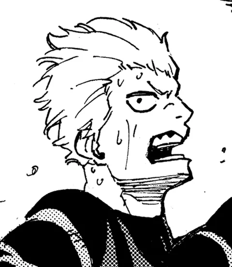

Sala I · Retratos · Nº 037
Pentágono estimado pelo site, a traço. Não oficial.
Juraki Ito
Atacante, Goleiro
Juraki Ito é atacante e goleiro do projeto Blue Lock. Camisa 1 (1ª Seleção). Ranking Blue Lock: 260º. Estreia no mangá: capítulo 10.
- Ranking
- 260º
- Percurso
- 1ª SeleçãoTime Y
- Fonte
- Blue Lock Wiki